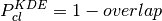

10. Cluster probability¶
Todo
Not finished.
ASteCA evaluates the probability that a spatial overdensity is a true stellar cluster, rather than a random aggregate of field stars.
This is done via the kde.test function provided by the ks package,
written for the R statistical software.
The function applies an N-dimensional kernel density estimator (KDE) based
algorithm, to asses the similarity between two N-dimensional arrangements of
elements.
In our case, the arrangements are CMDs, TCDs, or any arbitrary N-dimensional
photometric diagram (PD), and the elements are obviously observed stars.
The result of this comparison is quantified by a p-value.
The p-value of a hypothesis test is the probability, assuming the null hypothesis is true, of observing a result at least as extreme as the value of the test statistic.
—Modern Statistical Methods for Astronomy - Feigelson & Babu (2012)
A strict mathematical derivation of the method can be found in Duong et al. (2012).
The null hypothesis,  , is that both PDs were drawn from the same
underlying distribution, where a lower p-value indicates a lower probability
of being true.
The function is used to compare the cluster region’s PD with the PD of every
defined field region, and the PD of each field region with that of the remaining
field regions. This results in two sets of p-values: one for the cluster vs
field region analysis, and another for the field vs field region analysis.
, is that both PDs were drawn from the same
underlying distribution, where a lower p-value indicates a lower probability
of being true.
The function is used to compare the cluster region’s PD with the PD of every
defined field region, and the PD of each field region with that of the remaining
field regions. This results in two sets of p-values: one for the cluster vs
field region analysis, and another for the field vs field region analysis.
The entire process is repeated a fixed number of times (100 by default). For each run a random shift is applied to the position of stars in the PDs before the calculus is made, to account for photometric errors.
The two sets of p-values are smoothed by a one-dimensional KDE resulting in the curves shown in Fig. 10.1. The blue and red curves represent the cluster vs field region and field vs field region PD analysis. For a real star cluster we expect the blue curve to show lower p-values than the red curve, meaning that the cluster region PD has a different arrangement of stars when compared whit the PDs of surrounding field regions.

Fig. 10.1 Left: Function applied on a synthetic cluster, the curves are clearly
separated with the blue one ( , cluster vs field regions PD
analysis) showing much lower values than the red curve (
, cluster vs field regions PD
analysis) showing much lower values than the red curve ( ,
field vs field region PD analysis). The final probability value obtained
is close to 1 (or 100%).
Right: same analysis performed on a field region where no cluster is
present. The curves are now very similar resulting in a very low probability
of the region containing a true star cluster.
,
field vs field region PD analysis). The final probability value obtained
is close to 1 (or 100%).
Right: same analysis performed on a field region where no cluster is
present. The curves are now very similar resulting in a very low probability
of the region containing a true star cluster.
Both curves represent probability density functions, which means their total area is unity. Their domains are restricted between [0,1] with a small drift beyond these limits due to the 1D KDE processing. The total area that these two curves overlap (shown in gray in the figure) is thus a good estimate of their similarity. This means that the overlap area is proportional to the probability that the analyzed region holds a true cluster.
An overlap area of 1 means that the curves are exactly equal, pointing to a very low probability of the overdensity being a true cluster; the opposite is true for lower overlap values. We thus obtain the probability that the overdensity is a real cluster as:

These values are shown in Fig. 10.1 in the upper left corner.